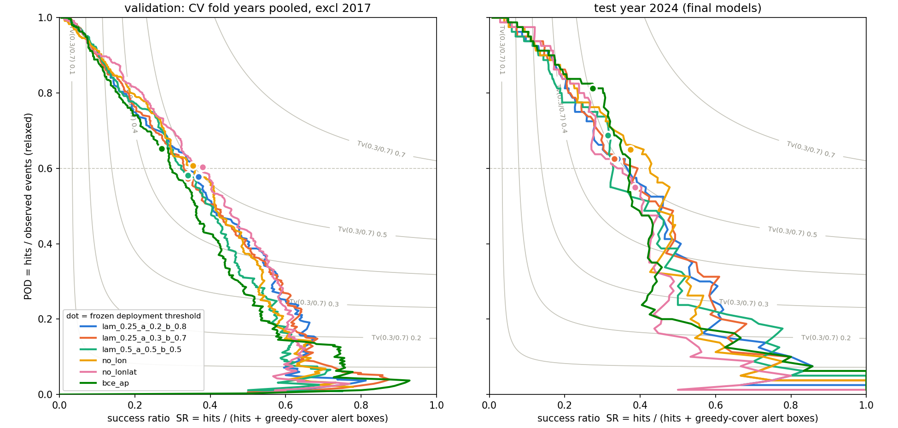

PyroCb
Intense wildfires, in combination with atmospheric conditions that favor convection, sometimes produce pyrocumulonimbus (pyroCb) clouds that propel large quantities of smoke, ash, and moisture high into the atmosphere. These extreme events can cause severe hazards, such as lightning that can start new fires, intense storms, and long-term climate impacts due to long-lasting smoke injected into the stratosphere.

Because of the intensity and rarity of these events, it is difficult to predict when they occur. Here we take a machine learning approach to predict the occurrence of these events from wildfire and weather data over North America.
Data and features
The input features are formed from several datasets covering North America between 2017 and 2024:
- RAVE dataset, merging fire products extracted from GOES and VIIRS.
- Engineered features from GFS analysis data on a grid with h time intervals.
- Cloud-top temperatures from the GOES cloud and moisture imagery product (channel C13, µm infrared), which measures the brightness temperature at the top of clouds.
The task becomes a classification problem, where we need to determine whether each fire will give rise to a pyroCb or not. Labels are computed from an inventory of observed pyroCbs between 2013 and 2024.
A list of features and their separability and correlations can be visualized on the input features explorer.
Evaluation metrics
The model needs to predict where pyroCbs may occur. In particular, it is more important to avoid misses than to avoid false alarms. Predicting an occurrence spatially and temporally close to a true event should also be rewarded, and we thus adopt a fuzzy metric rather than a pure pixel-wise loss to evaluate the model. This motivates the use of the symmetric dilated Tversky metric, defined as where is a small number to avoid dividing by 0 (we used ), and control the preference for penalizing false positives versus false negatives, and
The variables are dilated with a max pool over a given spatial and temporal neighborhood: is the largest prediction within the neighborhood of point , and indicates whether an observed event lies within that neighborhood. An observed event thus counts as a hit when a prediction fires anywhere nearby and as a miss otherwise, so each event is credited at most once (); conversely, a prediction is a false alarm only when no event lies within its neighborhood. The metric is symmetric in the sense that misses and false alarms are both judged with the same spatial and temporal tolerance. This fixes a flaw of the asymmetric variant that scores hits against the dilated labels, : there, a single event can collect hits proportional to the volume of its dilated halo, so a model can inflate its score by spraying predictions around events. Here we choose a box neighborhood centered on the prediction point, of size km in space and h in time. Note that for and no dilation, reduces to the standard critical success index (CSI).
Similar constructions appear in the neighborhood verification literature in meteorology 1 2: this metric can be seen as a Tversky-weighted 3 4 single-ratio variant of the neighborhood CSI loss of Lagerquist and Ebert-Uphoff 5, with the tolerance applied to both sides of the contingency table, in the same spirit as the relaxed precision and recall used to evaluate road extraction in computer vision 6.
Models and training
Loss
Models are trained using the combined loss: where . For each sample , we denote by the ground-truth label and by the predicted probability, where is the model logit and the sigmoid function. is the binary weighted cross-entropy loss: where upweights the rare positive class, and is the symmetric dilated Tversky loss,
Early stopping
We keep track of an EMA model (whose weights are an exponential moving average of the trained model's weights) during training, and use this model for future predictions.
The symmetric dilated Tversky metric is computed on the validation set (year 2021) at every epoch with the EMA model. We record the best model in that metric, typically after about 200 epochs of training.
Tuning of the setup
The number of pyroCbs varies a lot throughout the years. Generalization to a new year (in this work: 2024) should be robust to these variations. The following tuning stages thus operate over a leave-one-out cross validation per year. Models with the highest robustness over the training years (2017-2023) will be selected and tested on the test year.
The procedure is as follow:
- train the model on each fold, on 4 seeds; record early stopping epochs.
- foreach fold, calibrate the threshold to get a given target POD (0.6). Measure the POD on the left-out year with this operational thresholed.
- train a model on all train years with the mean number of epochs obtained in (1).
- test on year 2024 with ensemble prediction over seeds with the mean operational threshold obtained in (2).
The model with the best POD (closest to target in step 2) is selected.
Baseline
The baseline case uses pixel-wise metrics, and all available input features. This reduces to (pure binary cross-entropy loss), and the early stopping metric is set to the average precision (AP).
| model | deployed POD (mean std) | range | abs. error | mean FP |
|---|---|---|---|---|
| bce_ap_seedavg | 0.639 0.108 | [0.423, 0.771] | 0.090 | 207 |
Loss sweep [Event explorer]
Compare the effect of the loss function (different values of , , and ) on the prediction capabilities of the base model with all input features. To maximize , it is best to use a training loss with , , and :
| model | deployed POD (mean std) | range | abs. error | mean FP |
|---|---|---|---|---|
| lam_0.25_a_0.2_b_0.8_seedavg | 0.581 0.101 | [0.462, 0.802] | 0.076 | 117 |
| lam_0.25_a_0.3_b_0.7_seedavg | 0.599 0.077 | [0.538, 0.779] | 0.057 | 135 |
| lam_0.5_a_0.5_b_0.5_seedavg | 0.623 0.103 | [0.462, 0.767] | 0.089 | 153 |
| ens_mean | 0.590 0.090 | [0.500, 0.791] | 0.064 | 131 |
Equal-area reprojection
All results above were obtained on the latitude–longitude grid, whose east–west cell size shrinks ~3.5 from the southern to the northern edge of the domain: the physical footprint of a CNN patch — and of the dilation neighborhood — depended on latitude. All products are now consolidated on a shared Lambert conformal conic grid ( km cells, standard parallels N/N), so patches and the neighborhood tolerance correspond to a fixed physical scale everywhere, and wind features are rotated into grid-relative components. The full pipeline (loss sweep, cross-validation, threshold calibration) was re-run on this grid; the numbers below supersede the tables above.
POD generalization
Step (2) of the tuning procedure is a deployment simulation: the operational threshold is frozen from all other folds and applied to the left-out year, so the deployed POD measures how well the target operating point transfers to an unseen fire season. One season breaks this for every model: 2017 (only 25 events) sits far below target (deployed POD 0.24–0.48 across all cases) and its fold-optimal threshold is a strong outlier. Since this common failure does not discriminate between models, 2017 is excluded both from the summary below and from the frozen-threshold average — a leak-free choice, as only training years are involved.
Two further variants remove geographic coordinates from the input features, testing whether the model uses them to memorize year-specific fire geography:
| model | deployed POD (mean std) | range | abs. error | mean FP |
|---|---|---|---|---|
| bce_ap_seedavg | 0.684 0.093 | [0.538, 0.788] | 0.104 | 185 |
| lam_0.25_a_0.2_b_0.8_seedavg | 0.610 0.138 | [0.361, 0.788] | 0.111 | 101 |
| lam_0.25_a_0.3_b_0.7_seedavg | 0.619 0.071 | [0.543, 0.718] | 0.069 | 103 |
| lam_0.5_a_0.5_b_0.5_seedavg | 0.610 0.046 | [0.559, 0.692] | 0.037 | 105 |
| no_lon_seedavg | 0.612 0.056 | [0.538, 0.692] | 0.052 | 115 |
| no_lonlat_seedavg | 0.599 0.049 | [0.528, 0.671] | 0.042 | 92 |
Removing longitude and latitude gives the most faithful threshold transfer (essentially unbiased, smallest scatter) at the lowest false-alarm cost — the coordinates were indeed encoding fire geography that shifts from year to year. The BCE baseline shows the opposite failure mode: its probabilities saturate near 1, so the threshold value is stable but the operating point is not — the deployed POD overshoots systematically at roughly twice the false alarms.
On the held-out test year 2024 (80 events, thresholds frozen from the folds), no_lonlat reaches POD 0.55 with 89 false alarms and no_lon POD 0.65 with 121; both score a frozen-threshold within 2–7% of the
(label-leaking) oracle threshold, confirming that the calibrated operating point transfers to an unseen season.

The results of the no_lonlat case can be seen in this [event explorer].
References
-
Ebert, E.E., 2008. Fuzzy verification of high-resolution gridded forecasts: a review and proposed framework. Meteorological Applications, 15(1), pp.51-64. DOI ↩
-
Clark, A.J., Gallus Jr, W.A. and Weisman, M.L., 2010. Neighborhood-based verification of precipitation forecasts from convection-allowing NCAR WRF model simulations and the operational NAM. Weather and Forecasting, 25(5), pp.1495-1509. DOI ↩
-
Tversky, A., 1977. Features of similarity. Psychological Review, 84(4), pp.327-352. DOI ↩
-
Salehi, S.S.M., Erdogmus, D. and Gholipour, A., 2017. Tversky loss function for image segmentation using 3D fully convolutional deep networks. In Machine Learning in Medical Imaging (MLMI 2017), pp.379-387. DOI ↩
-
Lagerquist, R. and Ebert-Uphoff, I., 2022. Can we integrate spatial verification methods into neural network loss functions for atmospheric science? Artificial Intelligence for the Earth Systems, 1(4), e220021. DOI ↩
-
Wiedemann, C., Heipke, C., Mayer, H. and Jamet, O., 1998. Empirical evaluation of automatically extracted road axes. In Empirical Evaluation Techniques in Computer Vision, pp.172-187. ↩